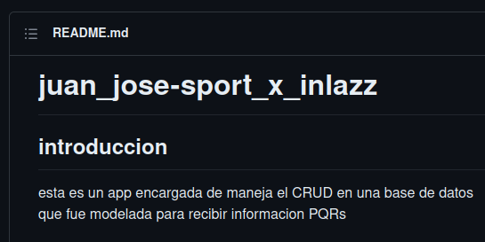
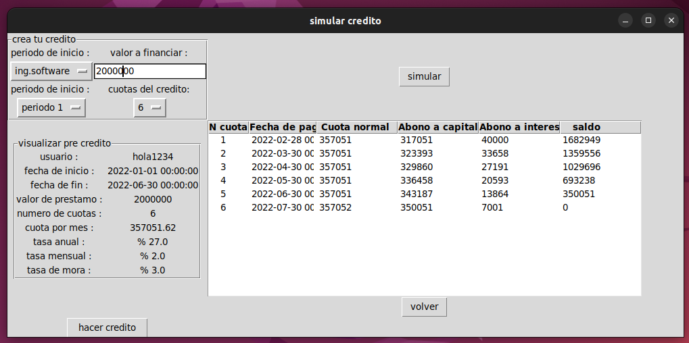
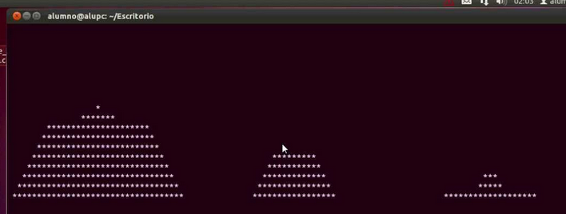

Acerca de mí
Hola, soy Juan José Cardona Gil, un programador apasionado por la tecnología y la innovación. Me especializo en el desarrollo de aplicaciones web utilizando Python y Django, y también tengo experiencia en el análisis de datos con Pandas y NumPy.
Habilidades
-

Python
-

Django
-

Pandas
-

NumPy
-

SQL
-

C++
-

HTML5
-

CSS3
Proyectos
-

Backend PQRS
En este proyecto se utilizo django con sus respectivos endpoint para la conexion de frotend a la base de datos
-

Tabla de amortizacion
En este proyecto se utilizo python con su libreria tkinter y con la POO desarrolara una app en la cual puedes simular prestamos y almacenar los datos
-

Torres de hanoi
En este proyecto se utilizo python para diseñar el juego de las torres de hanoi con su parte grafica desde la terminal